The Tissot Indicatrix characterizes local distortion in map projections. This package computes and plots indicatrixes using the PROJ library directly via the PROJ R package.
Derived (with permission) from Bill Huber’s GIS StackExchange answer.
Installation
# install.packages("pak")
pak::pak("tissot")Quick start
tissot() returns a tibble of distortion properties. The second argument is the projection target; source defaults to EPSG:4326:
library(tissot)
tissot(c(147, -42), "+proj=utm +zone=55 +south")
#> Tissot indicatrix: 1 point, +proj=utm +zone=55 +south
#> # A tibble: 1 × 14
#> x y dx_dlam dy_dlam dx_dphi dy_dphi
#> <dbl> <dbl> <dbl> <dbl> <dbl> <dbl>
#> 1 147 -42 0.74396 0 6.1410e-16 0.99739
#> # ℹ 8 more variables: scale_h <dbl>, scale_k <dbl>,
#> # scale_omega <dbl>, scale_a <dbl>, scale_b <dbl>,
#> # scale_area <dbl>, angle_deformation <dbl>,
#> # convergence <dbl>Columns include: scale_h (meridional), scale_k (parallel), scale_a / scale_b (max/min singular values), scale_area, angle_deformation, and convergence.
Plotting indicatrixes
indicatrix() builds plottable ellipses. The dashed circle is the undistorted reference; the filled ellipse shows the projection’s distortion.
xy <- expand.grid(x = seq(0, 1e6, length.out = 5), y = seq(4900000, 5700000, length.out = 4))
lonlat <- tissot_unproject(xy, source = "+proj=utm +zone=55 +south")
tis <- tissot(lonlat, "+proj=utm +zone=55 +south")
plot(indicatrix(tis), scale = 3e4)
tissot_map()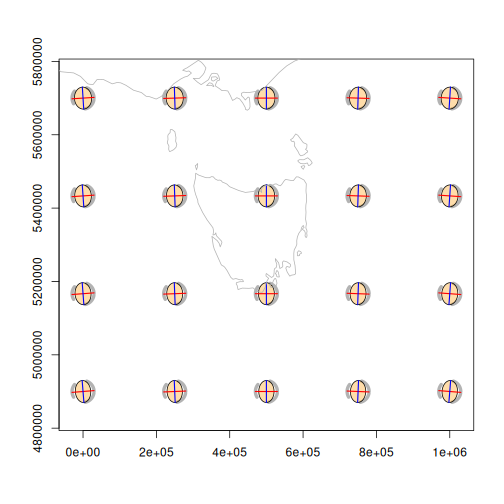
plot of chunk utm55
What does that top left indicatrix look like?
plot(indicatrix(tis)[1])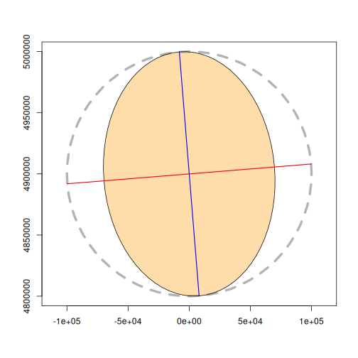
plot of chunk topleft
Far from our UTM zone we are in a lot more trouble.
## UTM zone 55 is at 147 longitude (55 * 6 - 183)
tis <- tissot(cbind(100, -42), "+proj=utm +zone=55 +south")
plot(indicatrix(tis))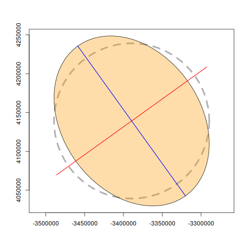
plot of chunk very-bad-trouble
## In Mercator we have well known problems
tis <- tissot(cbind(147, -42), "+proj=merc")
plot(indicatrix(tis))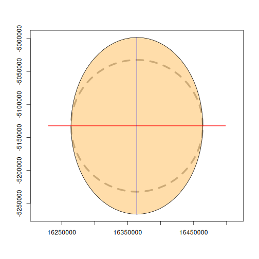
plot of chunk very-bad-trouble
## close to the equator Mercator is ok (in exactly the same way that UTM Zone 55 is ok near 147E longitude)
tis <- tissot(cbind(147, 0), "+proj=merc")
plot(indicatrix(tis))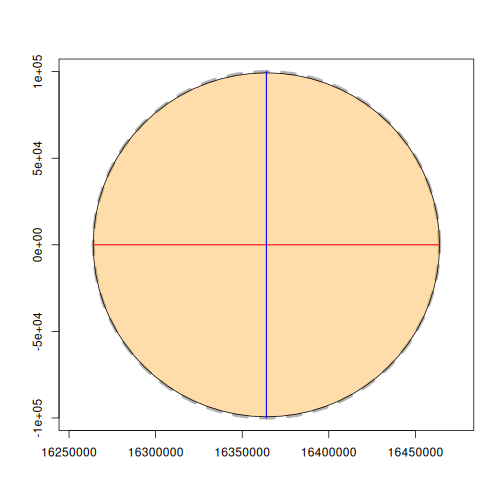
plot of chunk very-bad-trouble
Map projection is arbitrary.
xy <- expand.grid(seq(-150, 150, by = 30), seq(-60, 60, by = 30))
r <- tissot(xy, "+proj=robin")
ii <- indicatrix(r)
plot(ii, scale = 6e5, add = FALSE, show.axes = TRUE, show.circle = TRUE)
tissot_map()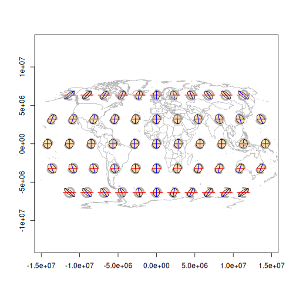
plot of chunk robinson
Distortion summary
summary(r)
#> Tissot indicatrix: 55 points
#> Source CRS: EPSG:4326
#> Target CRS: +proj=robin
#> Areal scale: min=0.8154 max=1.2004 mean=1.0095
#> Angular def: min=1.9369 max=51.8469 mean=21.3801 deg
#> Scale h: min=0.8856 max=1.3030 (meridional)
#> Scale k: min=0.8487 max=1.3555 (parallel)Colour-coded distortion
Pass fill.by to colour ellipses by a distortion metric:
plot(ii, scale = 6e5, add = FALSE, fill.by = "scale_area")
tissot_map()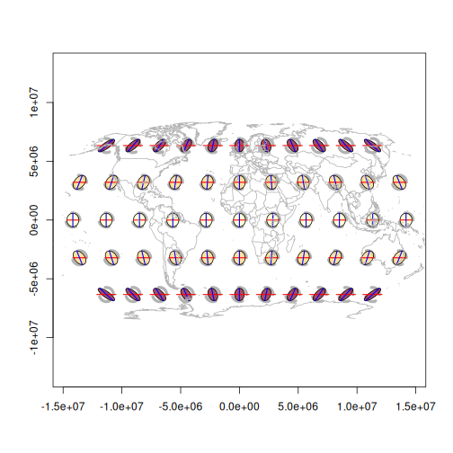
plot of chunk coloured
plot(ii, scale = 6e5, add = FALSE, fill.by = "angle_deformation")
tissot_map()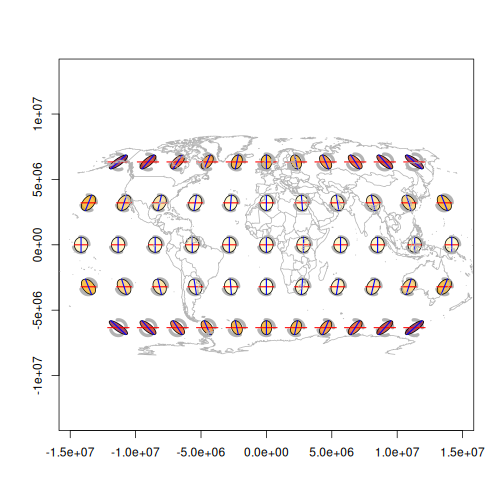
plot of chunk angle_deformation
Projection comparison
m <- tissot(xy, "+proj=moll")
plot(indicatrix(m), scale = 5e5, add = FALSE)
tissot_map()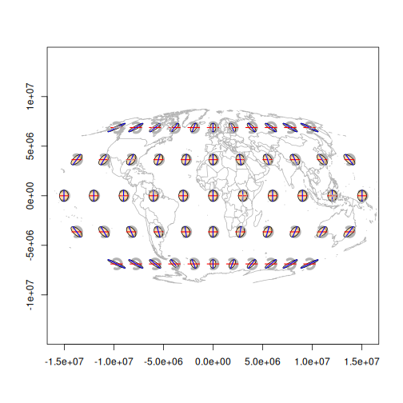
plot of chunk mollweide
merc_xy <- expand.grid(seq(-150, 150, by = 30), seq(-75, 75, by = 15))
me <- tissot(merc_xy, "+proj=merc")
plot(indicatrix(me), scale = 5e5, add = FALSE)
tissot_map()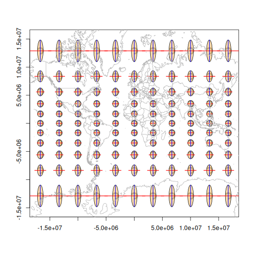
plot of chunk mercator
Rich single-indicatrix plots
A single indicatrix with axes and reference circle:
ii2 <- indicatrix(c(147, -42), "+proj=lcc +lat_1=-36 +lat_2=-38 +lat_0=-37 +lon_0=145")
plot(ii2[[1]], scale = 1e4, add = FALSE, show.axes = TRUE, show.circle = TRUE)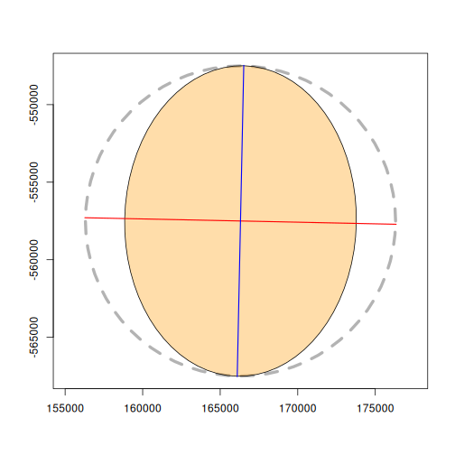
plot of chunk single2
ii3 <- indicatrix(c(147, -42), "+proj=lcc +lat_1=-15 +lat_2=5 +lat_0=0 +lon_0=145")
plot(ii3[[1]], scale = 1e4, add = FALSE, show.axes = TRUE, show.circle = TRUE)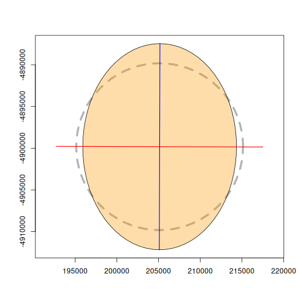
plot of chunk single3
Arbitrary projections
Lambert Conformal Conic
pxy <- expand.grid(seq(100, 200, by = 25), seq(-75, -45, by = 10))
p <- tissot(pxy, "+proj=lcc +lat_0=-60 +lon_0=147 +lat_1=-70 +lat_2=-55")
plot(indicatrix(p), scale = 3e5, add = FALSE, fill.by = "scale_area")
tissot_map()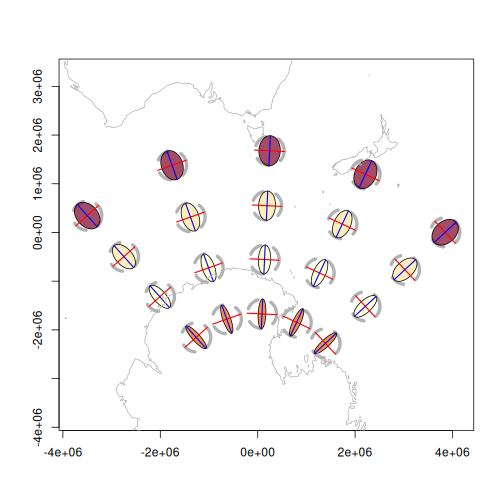
plot of chunk lcc
Universal Transverse Mercator
qxy <- expand.grid(seq(100, 200, by = 25), seq(-75, -45, by = 10))
p <- tissot(qxy, "EPSG:32755")
plot(indicatrix(p), scale = 3e5, add = FALSE, fill.by = "scale_area")
tissot_map()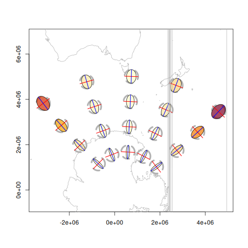
plot of chunk utm
Polar projections
In any projection we should refer to a regular grid of points in its crs, else we get weird situations like this, more obvious on an actual pole:
polar_xy <- expand.grid(seq(-180, 150, by = 30), seq(-80, -50, by = 10))
p <- tissot(polar_xy, "+proj=stere +lat_0=-90 +lon_0=147")
plot(indicatrix(p), scale = 2.5e5, add = FALSE, fill.by = "scale_area")
tissot_map()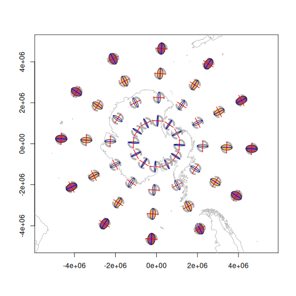
plot of chunk polar
la <- tissot(polar_xy, "+proj=laea +lat_0=-90 +lon_0=147")
plot(indicatrix(la), scale = 2.5e5, add = FALSE)
tissot_map()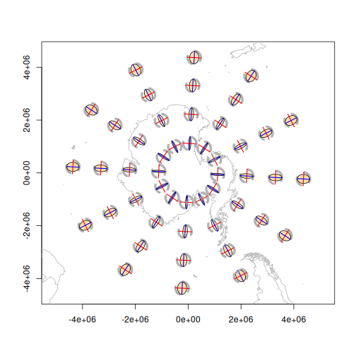
plot of chunk laea
If we push the centre away from the pole in Azimuthal Equidistant, it’s useful to see what happens.
lea <- tissot(polar_xy, "+proj=aeqd +lat_0=-20 +lon_0=147")
plot(indicatrix(lea), scale = 2.5e5, add = FALSE)
tissot_map()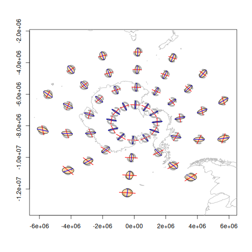
plot of chunk aeqd
Consider generating input in the crs you are assessing
As with the UTM example above, using tissot_unproject() it is usually far better to generate a grid in the CRS being assessed. A grid in lon/lat won’t be very meaningful in many projections.
op <- par(mfrow = c(1, 2))
ext <- c(-180, 150, -80, -50)
crs <- "+proj=stere +lat_0=-90 +lon_0=147"
projext <- reproj::reproj_extent(ext, crs, source = "EPSG:4326")
polar <- expand.grid(seq(projext[1L], projext[2L], by = 30 * 1e5), seq(projext[3L], projext[4L], by = 10 * 1e5))
polar_xy <- tissot_unproject(polar, "EPSG:4326", source = crs)
p <- tissot(polar_xy, crs, source = "EPSG:4326")
plot(indicatrix(p), scale = 2.5e5, add = FALSE, fill.by = "scale_area")
tissot_map()
ext <- c(-180, 150, -80, -50)
crs <- "+proj=laea +lat_0=-90 +lon_0=147"
projext <- reproj::reproj_extent(ext, crs, source = "EPSG:4326")
polar <- expand.grid(seq(projext[1L], projext[2L], by = 30 * 1e5), seq(projext[3L], projext[4L], by = 10 * 1e5))
polar_xy <- tissot_unproject(polar, "EPSG:4326", source = crs)
p <- tissot(polar_xy, crs, source = "EPSG:4326")
plot(indicatrix(p), scale = 2.5e5, add = FALSE, fill.by = "scale_area")
tissot_map()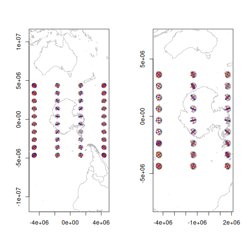
plot of chunk polar-proj
par(op)Why this package?
Most “Tissot indicatrix” plots you’ll find online are just geographic circles drawn on the map. They show what happens to a circle under the projection, which is useful — but it’s not the indicatrix. The indicatrix is the Jacobian of the projection at a point: it gives you actual scale factors, angular deformation, and areal distortion. This package computes those.
Other examples: mgimond.
Code of Conduct
Please note that the tissot project is released with a Contributor Code of Conduct. By contributing to this project, you agree to abide by its terms.